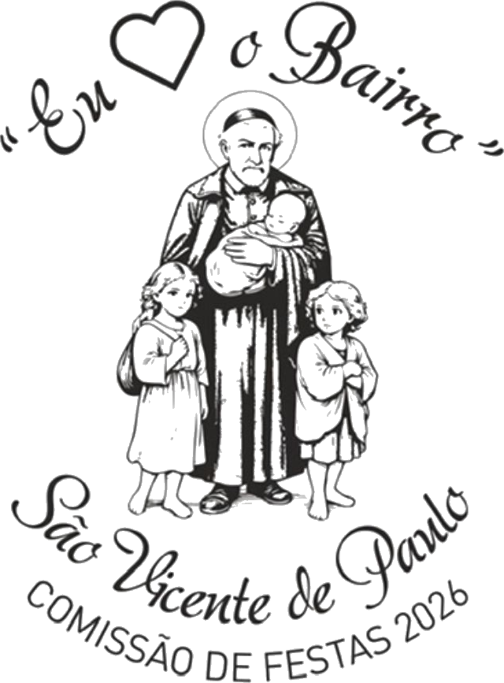
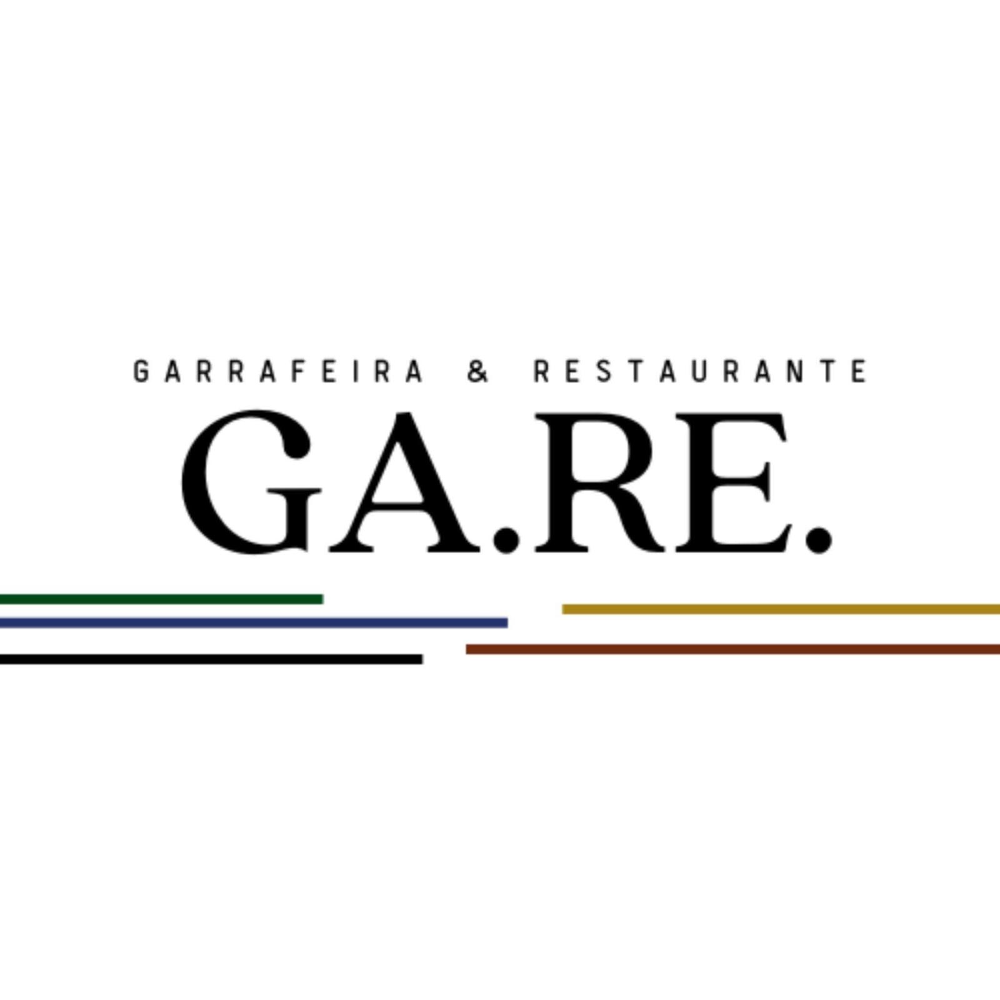
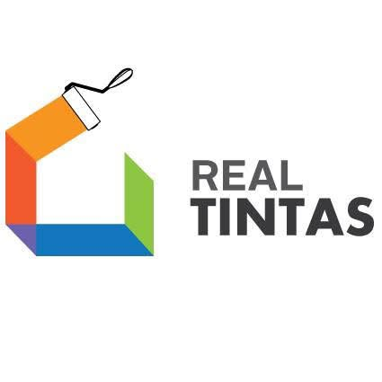
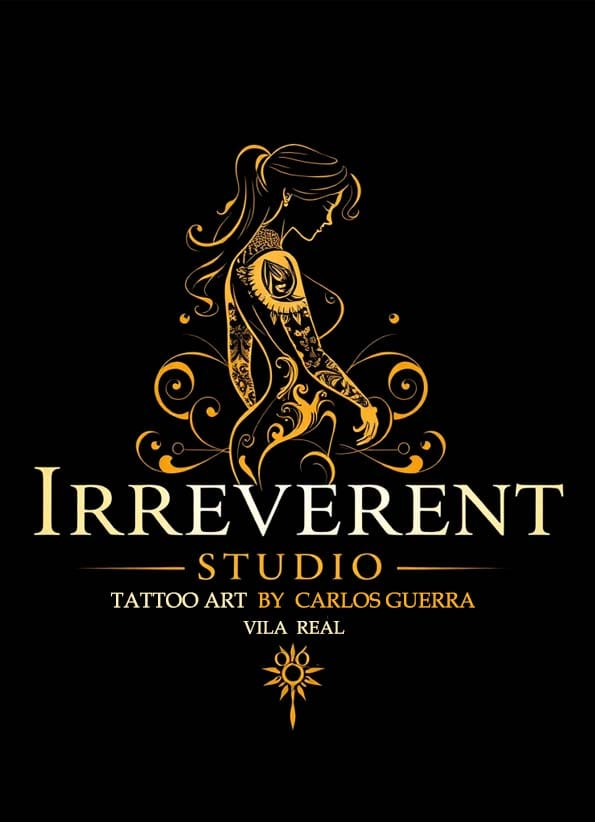

Sexta-feira
Abertura da festa
Programa em preparação

ApoiarComissão de Festas 2026Bairro S. Vicente de Paulo · Vila Real
Tradição, música, fé e encontro. Uma festa construída pela comunidade — para todos.

A Festa em Honra de São Vicente de Paulo realiza-se no terceiro fim de semana de setembro, no bairro que leva o seu nome.
Durante três dias, a celebração religiosa, a procissão, a música e o convívio juntam moradores, famílias, amigos e visitantes. Em 2026, encontramo-nos nos dias 18, 19 e 20 de setembro.
A Igreja de Nossa Senhora da Conceição é a nossa igreja paroquial. É aqui que se encontra a imagem de São Vicente de Paulo e onde decorre toda a celebração religiosa da festa.
Edição 2026
O programa completo e o cartaz serão publicados aqui assim que estiverem fechados.
Abertura da festa
Encontro e animação
Celebração e procissão
Este espaço receberá o cartaz final e toda a informação prática da festa.
O caminho até setembro
Encontros, iniciativas e momentos de angariação que juntam o bairro e ajudam a construir a festa.

Churrasco, caldo verde, karaoke e convívio.

Sardinhas, carne, caldo verde e tradição no centro de Vila Real.
Novos cartazes serão acrescentados a este arquivo.
Quem torna tudo possível
O apoio das empresas e profissionais da nossa região transforma vontade em festa. Aqui reconhecemos cada contributo.
Soluções Outdoor
Genuíno Investments
Quinta Seara d’Ordens
Magical Earnings Climatização
Casas da Eira

GA.RE Restaurante e Garrafeira
NaturWaterPark
C.R&N — Investimentos Imobiliários

Real Tintas

Irreverent Studio
Restaurante Convívio
Estética Iluminada
Casa dos Presuntos
Eletro Ideal
Sandro Oliveira
Ana
Todos os apoios têm o mesmo espaço. A lista será atualizada à medida que novos parceiros se juntarem.
Parceiros institucionais e associativos
Levar o Bairro consigo
Canecas e T-shirts pensadas para celebrar o nosso bairro — e ajudar a tornar a festa possível.

Modelo unissexo e modelo feminino. Cores e tamanhos serão confirmados antes da abertura das encomendas.
Mock-up provisório
Canecas metálicas com pega em mosquetão, disponíveis em várias cores.
Disponibilidade em brevePreços, tamanhos e pontos de venda serão publicados assim que estiverem confirmados.
Angariação de fundos
O sorteio realiza-se no domingo, 20 de setembro. Cada rifa ajuda a financiar a festa e dá acesso a vários prémios oferecidos pelos nossos parceiros.

Smart TV QLED 4K de 43″ — LG 43 UA7300
Estadia para duas pessoas, com pequeno-almoço, em Montesinho
Jantar para duas pessoas — menu de degustação
Uma noite para duas pessoas em bungalow
15 litros de tinta Stucomat Robialac
Patins em linha Oxelo Fit500 e capacete MF500
Voucher para tatuagem
Jantar para duas pessoas — valor estimado de 60 €
Voucher de massagem com pedras quentes
Uma garrafa Reserva tinto, uma garrafa Reserva branco e uma garrafa Porto Fine Tawny
Três salpicões
Kit de primeiros socorros
Corte de cabelo unissexo
Manutenção de verniz gel
Quem faz a festa acontecer
Treze pessoas, muitas mãos e uma vontade comum: manter viva a Festa de São Vicente de Paulo.
Álbum da comunidade
Este espaço crescerá com fotografias da preparação, da festa, da procissão e das pessoas do bairro.
Memória viva
O início deste arquivo: programa, cartazes, fotografias, parceiros, contas e aprendizagens da edição de 2026.
Um espaço preparado para receber novas pessoas, novas ideias e a continuidade da tradição.
Documentar para que cada comissão possa começar melhor do que a anterior.
Fazer parte
Empresas, comerciantes, moradores e amigos do bairro podem contribuir com patrocínios, materiais, serviços, prémios ou tempo.